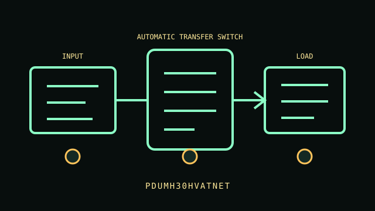

[ AUTOMATIC TRANSFER SWITCH // IDENTIFIED MODEL ]
PDUMH30HVATNET
208/230 V, 30 A class dual-input rack ATS PDU. IEC C13/C19 outlets; exact count and output breaker grouping per matching manual. This record describes the named regional model only. Variants and accessories must be matched against the complete product label and manufacturer documentation.

ARCHIVAL IDENTIFICATION: Preserve the complete SKU, region, serial/date code, hardware/firmware revision, installed options and observed condition. Similar names do not establish electrical equivalence.
Exact model specifications
| Catalog category / topology | Automatic transfer switches — Automatic transfer switch. |
|---|---|
| Electrical ratings | 208/230 V, 30 A class dual-input rack ATS PDU. |
| Receptacles / connectors | IEC C13/C19 outlets; exact count and output breaker grouping per matching manual. |
| Battery / replacement / hot-swap | Not applicable: this model has no battery or stored-energy backup. Network monitoring/source switching; no battery/runtime. Compatible dual feeds required; isolate management network and verify label/derating. |
| Runtime / operating conditions | No stored runtime. The product supplies only its stated surge suppression, metering, regulation, distribution or source-transfer function; continuity depends on upstream AC and connected equipment. |
| Network / monitoring interface | Local or network source/status indications according to the model note; source transfer is not energy storage. |
| Electrical compatibility | Network monitoring/source switching; no battery/runtime. Compatible dual feeds required; isolate management network and verify label/derating. |
| Warnings / revision controls | Network monitoring/source switching; no battery/runtime. Compatible dual feeds required; isolate management network and verify label/derating. Verify complete suffix, electrical ratings, connectors, firmware/manual revision and regional certification against the actual nameplate before connecting equipment. |
Service and archival notes
- Photograph the nameplate, inlet/outlet map, serial/date code, status indicators and accessories; record load, input, environment and test date separately from manufacturer ratings.
- Do not confuse distribution/regulation/surge suppression/metering or transfer with battery backup; this model has no stored runtime.
- Never open energized mains equipment. Do not energize cracked enclosures, damaged cords, overheated connectors, compromised grounding or swollen/leaking batteries.
- Network monitoring/source switching; no battery/runtime. Compatible dual feeds required; isolate management network and verify label/derating.
Manufacturer sources and manual
- Eaton / Tripp Lite manufacturer product search — PDUMH30HVATNETFind the manufacturer’s specification sheet for the exact named model and regional SKU.
- Eaton / Tripp Lite manuals / support libraryUse the user guide, service and safety instructions matching the label and revision. This static archive does not replace manufacturer documentation.